|
|
|
|
Blended themes |
New blended theme implemented
in org.jvnet.substance.theme.SubstanceBlendBiTheme
is created based on two original themes (should be simple ones) and a
likeness coefficient. The colors of the blended theme will be the
interpolation of colors of the original themes (based on the likeness
coefficient). This example shows a mixed theme created from two blended themes, the first one a blend of Bottle Green and Lime Green and the second one a blend of Purple and Aqua:
new SubstanceMixBiTheme(new SubstanceBlendBiTheme(
And the result is: 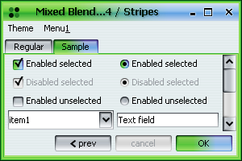 |
|
|
|
|
Saturated / desaturated themes |
New saturated theme implemented
in org.jvnet.substance.theme.SubstanceSaturatedTheme
is created based on a original theme and a saturation factor. The valid
range for the saturation factor is -1.0...1.0.
The positive values produce saturated colors (the higher the value, the more
saturated the colors will be), while the negative values produce desaturated
colors (the lower the value, the more desaturated the colors will be). Important note - do not create instances of saturated themes directly using the constructor. Use the
public SubstanceTheme saturate(double saturateFactor)
method available in org.jvnet.substance.theme.SubstanceTheme
to create properly saturated themes (this is true especially for non-simple themes).
Here are examples of a regular (Aqua theme), the desaturated version
(by 50 percent) and the saturated version (by 50 percent). Note that all theme
paintings (including disabled controls) are saturated: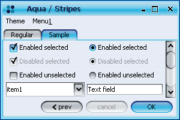 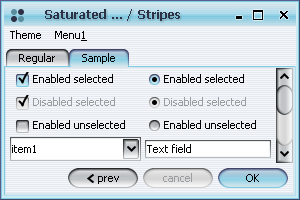 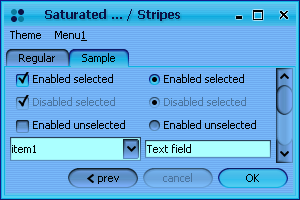 |
|
|
|
|
Complex themes |
The
org.jvnet.substance.theme.SubstanceComplexTheme
allows complete control over active, default and disabled color schemes
for application / single control.
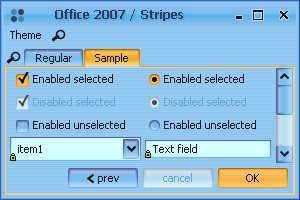 The frame above was created under the following theme:
ColorScheme shiftBlue = new ShiftColorScheme(
Additional sample complex themes implemented in org.jvnet.substance.theme.ComplexThemeFactory: 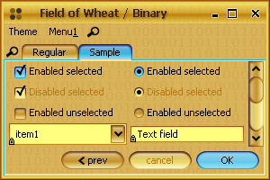 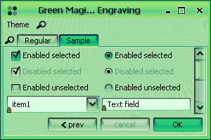 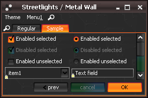 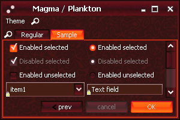 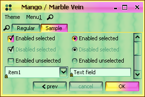 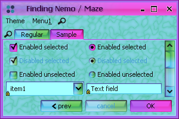 |
|
|
|
|
Prototype display value for combo popup |
New client property
SubstanceLookAndFeel.COMBO_POPUP_PROTOTYPE
defines the prototype display value for combo popup (useful for
narrow popups with values that span wide). The value should either be an
Object (in which case it's taken to be a model entry) or
an implementation of org.jvnet.substance.combo.ComboPopupPrototypeCallback.
Implementation of this interface that returns the widest entry is available in
org.jvnet.substance.combo.WidestComboPopupPrototype. Example of a combo with Object prototype display value for popup:
JComboBox comboProto1 = new JComboBox(new Object[] { "aa", "aaaaa",
And the result is (note that the last element is "cut off"): 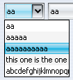 Example of a combo with Object prototype display value for popup:
JComboBox comboProto1 = new JComboBox(new Object[] { "aa", "aaaaa",
And the result is (note that the last element is "cut off"): Example of a combo with widest-entry prototype display value for popup:
JComboBox comboProto2 = new JComboBox(new Object[] { "aa", "aaaaa",
And the result is (note that the last element is "cut off"): 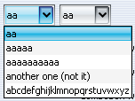 Example of a combo with custom computation of prototype display value for popup:
JComboBox comboProto3 = new JComboBox(new Object[] { "aa", "aaaaa",
And the result is (last element is selected as prototype): 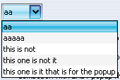 |
|
|
|
|
Expanding per-component theme support |
The support for SubstanceLookAndFeel.THEME_PROPERTY
has been expanded to additional controls. Here are screenshots that show custom theme
(Bottle Green being used on a specific tabbed pane and on a specific
scroll pane (scroll bars and scroll buttons): 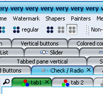 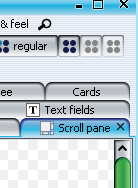 |
|
|
|
|
Animated tab icons |
New client property
SubstanceLookAndFeel.TABBED_PANE_TAB_ANIMATION_KIND
defines the icon animation kind for a tab in tabbed pane. The value should be
one of the org.jvnet.substance.utils.SubstanceConstants.TabAnimationKind
enum (currently supported values are LOADING,
ERROR and WARNING).
In order to start the animation or change the animation kind to a different value,
put the client property to relevant value
on the specific tab component. In order to stop the animation, set the client
property to null. Note that while the animation starts immediately, the change and
stop are performed only at the end of the current animation cycle. Example of a tab with the original icon and the same tab under three different animation kinds: |
|
|
|
|
Additional title painter |
Added alternative title painter. Can be set using:
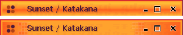 |
|
|
|
|
Tab paging |
Ctrl+Right Arrow and Ctrl+Left Arrow keyboard shortcuts provide thumbnail
paging of all tabs in the currently focused tabbed pane (unless consumed by any child
component). Pressing Ctrl+Right/Left Arrow opens three windows, one in the middle
that shows a large thumbnail of a tab (starts from the current tab), and two side windows
displaying small thumbnails of previous and next tabs. Each press on arrow key (while Ctrl is pressed)
moves the thumbnails forward / backward (cycling). Once Ctrl is released, the currently shown tab
(in the middle thumbnail window) is selected. 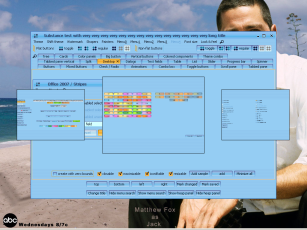 |
|
|
|
|
"Select all on focus" on text components |
New client property
LafWidget.TEXT_SELECT_ON_FOCUS specifies that the
relevant text field(s) should select all text on focus gain. This property can be
set either on a specific text field or globally on UIManager
and should be either Boolean.TRUE or
Boolean.FALSE. Example of a text field before and
after focus gain: 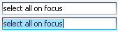 |
|
|
|
|
Edit context menu on text components |
New client property
LafWidget.TEXT_EDIT_CONTEXT_MENU specifies that the
relevant text field(s) should show edit context menu (with Cut / Copy / Paste /
Select All / Delete menu items enabled in correspondance with the text field enabled status,
text field selection and clipboard contents). This property can be
set either on a specific text field or globally on UIManager
and should be either Boolean.TRUE or
Boolean.FALSE. Example of a text field before and
after selecting some text: 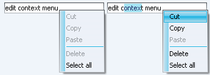 |
|
|
|
|
Drag-and-drop support on trees |
New client property
LafWidget.TREE_AUTO_DND_SUPPORT specifies that the
relevant tree(s) should provide DnD support. This property can be
set either on a specific text field or globally on UIManager
and should be either Boolean.TRUE or
Boolean.FALSE. Examples of a tree with DnD support
when drop is enabled (gson21 is being dragged) and a tree with DnD support
when drop is not enabled (gson11 is being dragged under one of its children): 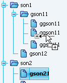 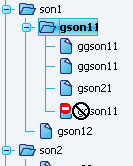 |
|
|
|
|
Tab overview dialog supports periodic refreshing |
The following two new methods have been added to
the org.jvnet.lafwidget.tabbed.TabPreviewPainter
class:
public boolean toUpdatePeriodically(JTabbedPane tabPane)
The default implementation of the first method return false (no periodic update). Custom implementation that wishes to periodically update the tab overview dialog should return true in the overriding implementation of the first method and the number of milliseconds between updates in the overriding implementation of the second method. Screenshots below show tab overview of a tabbed pane with 3 seconds period. The second screenshot shows the overview after some tabs have been added. The third screenshot shows the overview after some tabs have been deleted. 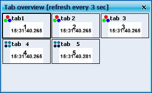 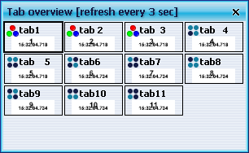 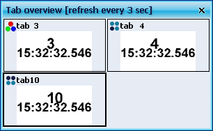 |
|
|
|
|
Fractal-based watermarks |
Fractal-based
watermarks were added to the watermark pack.
Four new watermarks are Kaleidoscope,
Scriptures, Singularity
and Vortex (shown here under Dark
Violet theme): 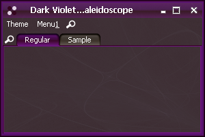 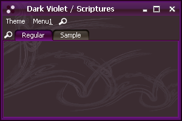 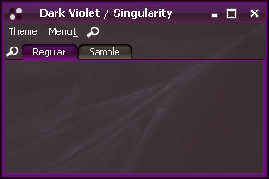 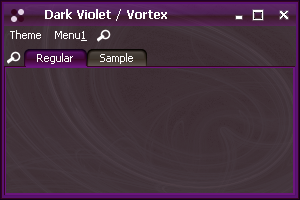 |
|
|
|
|
Custom buttons on decorated title panes |
The following two methods in
org.jvnet.substance.SubstanceLookAndFeel
allow adding and clearing custom buttons on decorated title panes of
frames, dialogs and internal frames:
public static void setRootPaneCustomTitleButtons(JRootPane rootPane,
Sample usage of this API that creates custom buttons that open an option dialog when clicked and have theme-consistent icons is:
TitleButtonInfo tbInfo1 = new TitleButtonInfo();
The title pane before calling the code above: 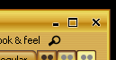 The title pane after calling the code above: 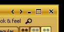 The tooltip on the first custom button: 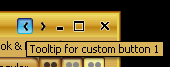 The first custom button clicked: 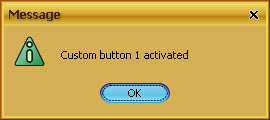 |
|
|
|
|
Fade animations on lists |
Lists provide fade animations on
selections (both user-input and via API) and rollovers. The top part of the
screenshot below shows a list when element 6 is selected. The middle part
shows the fade animation when the element 7 is selected instead (note the
fade-out on element 6 and fade-in on element 7. The bottom
part shows the animation completed and element 7 selected. 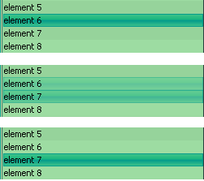 Note that as with other controls, setting the org.jvnet.lafwidget.LafWidget.ANIMATION_KIND client property on the list with one of the values of org.jvnet.lafwidget.utils.AnimationKind enum will change the fade animation speed. |
|
|
|
|
Improved rendering of drag bumps on toolbars |
The rendering of drag bumps on toolbars has been
improved to provide seamless "embedding" of drag bumps into the toolbar.
The first screenshot shows the toolbar drag bumps under 2.3, while the
second screenshot shows the toolbar drag bumps under 3.0. 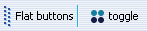 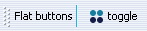 |
|
|
|
|
Added drag bumps on split pane dividers |
Drag bumps have been added to the split pane dividers: 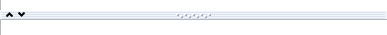 |
|
|
|
|
Improved painting of sliders |
The slider icons have been made smaller to produce more
compact control. The screenshot below shows sliders under versions 2.3 (top-left horizontal
and mid-right vertical) and 3.0 (bottom-left horizontal and right vertical): 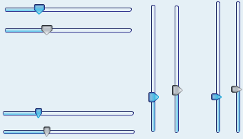 |
|
|
|
|
Configurable corner radius of toolbar buttons |
New client property
SubstanceLookAndFeel.CORNER_RADIUS
defines the corner radius of toolbar buttons. The value should be an instance of
Float and can be set on a single button, a single toolbar or globally on UIManager.
A screenshot below shows three buttons on the same toolbar, the first with the
default 2.0 corner radius, the second with custom 5.0 corner radius and the third
with custom 0.0 corner radius:
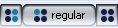 |
|
|
|
|
Improved painting of inverted themes |
The painting of inverted themes has been improved
to create more contrast and improve title color. The first image
below is pre-3.0 implementation, the second image is 3.0 implementation.
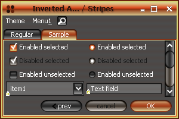 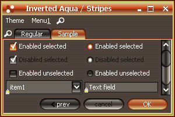 |
|
|
|